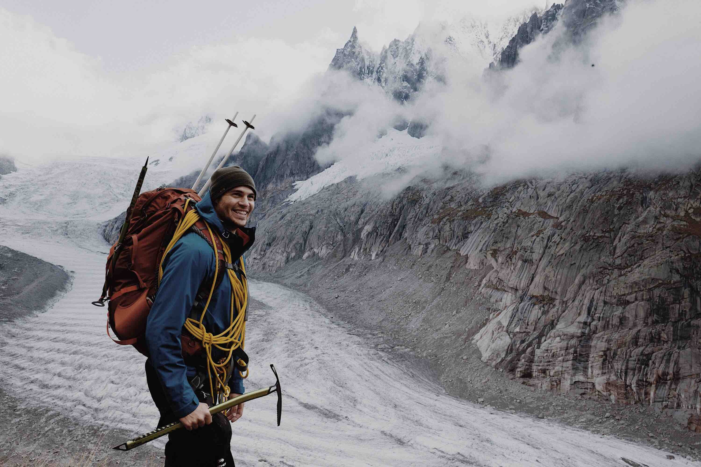
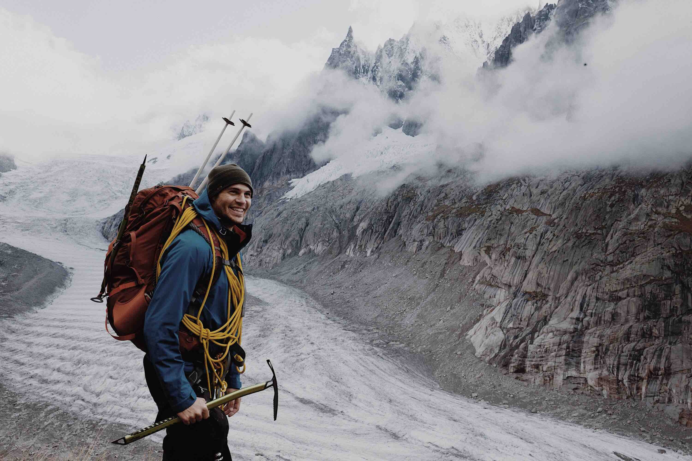

Adventure
A Wonderful Gift
Event Camp info
Loverland travel or overlanding refers to an overland journey perhaps originating with Marco Polo's first overland expedition in the 13th century from Venice to the Mongolian court of Kublai Khan.
Event Camp info
Today overlanding is a form of extended adventure holiday, embarking on a long journey, often in a group. Overland companies provide a converted truck or a bus plus a tour leader.
Overland travel or overlanding refers to an overland journey perhaps originating with Marco Polo's first overland expedition in the 13th century from Veniceto the Mongolian court of Kublai Khan. Today overlanding is a form of extended adventure holiday,embarking on a long journey, often in a group. Overland companies provide a converted truck or abus plus a tour leader, and the group travels together overland for a period of weeks or months.
 
